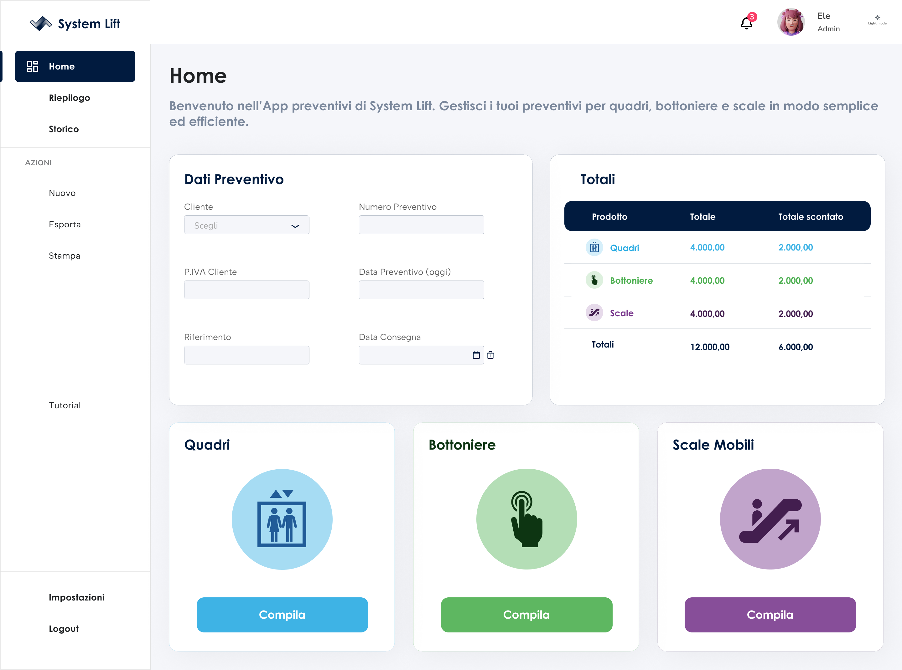
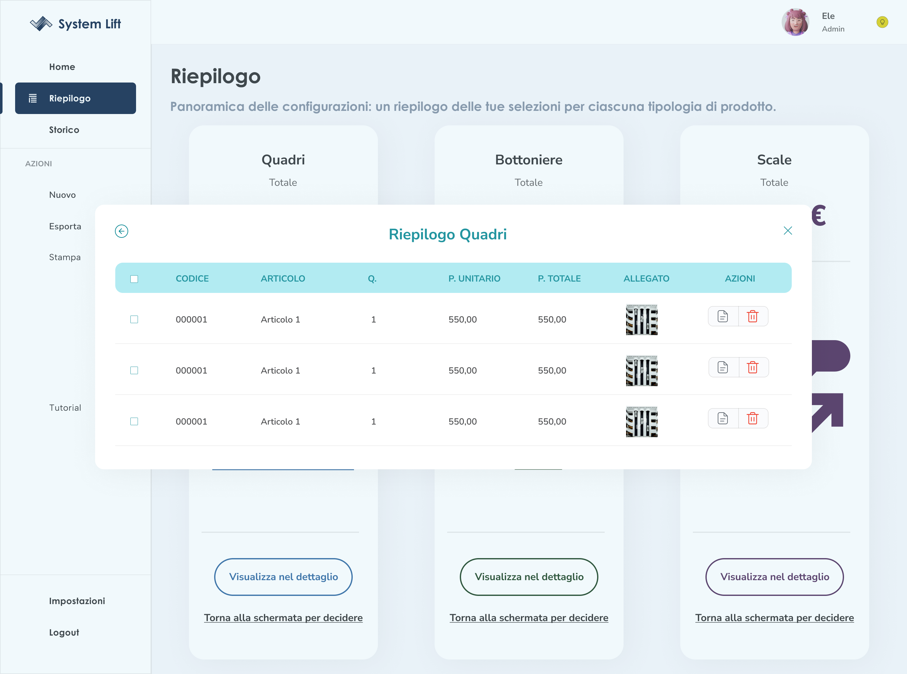
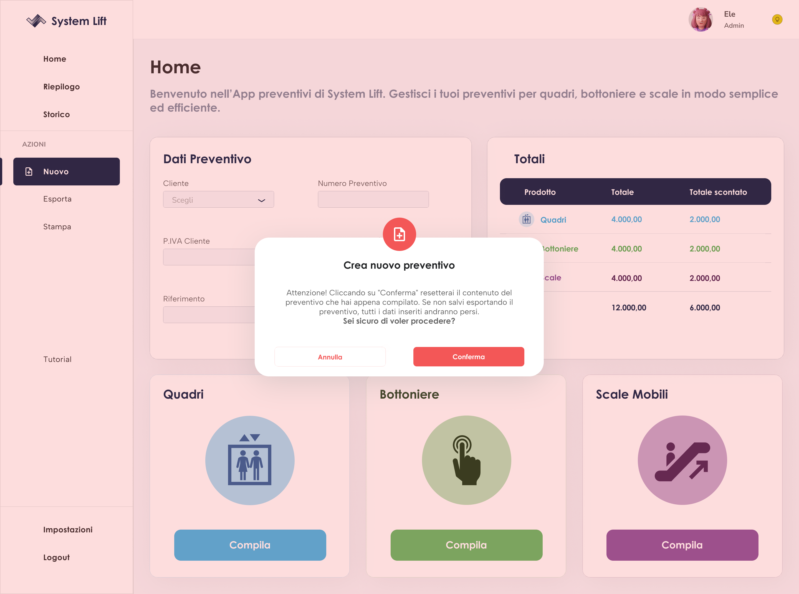

Dashboard Preventivi
Applicazione web per creare preventivi — online e offline — con una visione chiara su dove potrà arrivare con l'AI.
01Obiettivo
Costruire un'applicazione web per la creazione di preventivi, utilizzabile sia online che offline. Il problema di partenza era pratico: serve uno strumento flessibile, non un foglio Excel rigido. La soluzione è una Static Web App — leggera, deployabile ovunque, e soprattutto aperta a integrazioni future.

IMG
GIF
IMG// clicca su un'immagine per ingrandirla
02Processo di creazione
Il punto di partenza è stato una domanda precisa: Excel o applicazione? La risposta non era scontata. Excel è immediato, familiare, zero sviluppo. Ma ha un limite strutturale: non scala, non si integra, non evolve.
La scelta dell'applicazione web è nata da una visione a lungo termine: costruire qualcosa su cui si possa costruire ancora. Una SWA in HTML, CSS, JavaScript e Python offre la base tecnica giusta — portabile, manutenibile, estendibile.
La scelta di non usare Excel non era solo tecnica. Era strategica: volevo lasciare la porta aperta all'integrazione AI. Un'applicazione web può ospitare un modello che genera il preventivo in autonomia. Un foglio Excel no.
03Stato del progetto
Il progetto è attualmente in pausa. La struttura base è definita, le scelte tecnologiche sono solide. La pausa non è abbandono — è attesa del momento giusto per riprendere con la giusta energia e continuità.